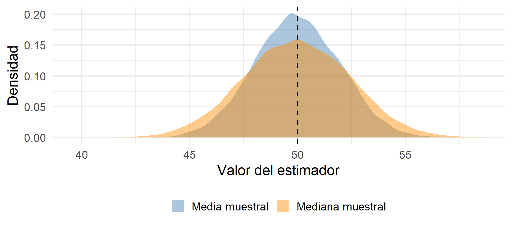
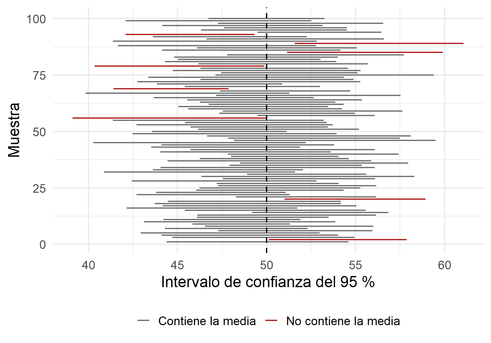
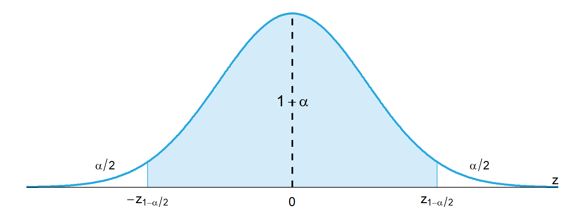
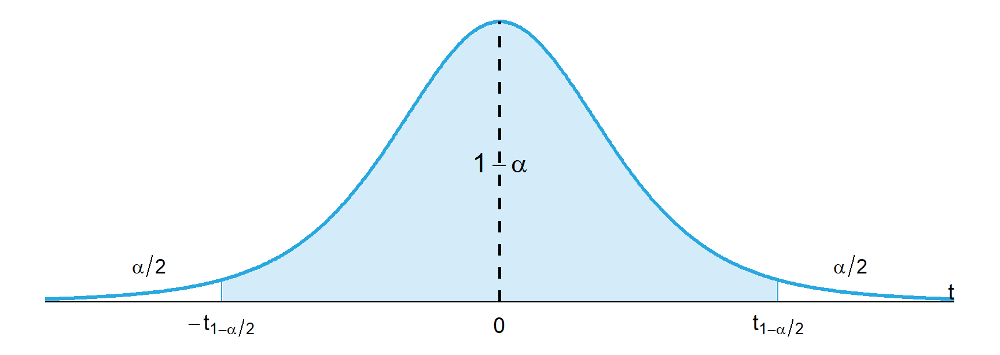
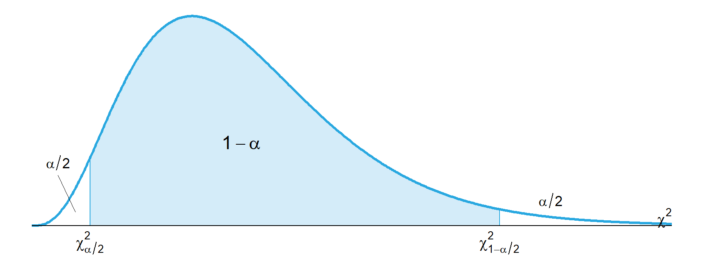
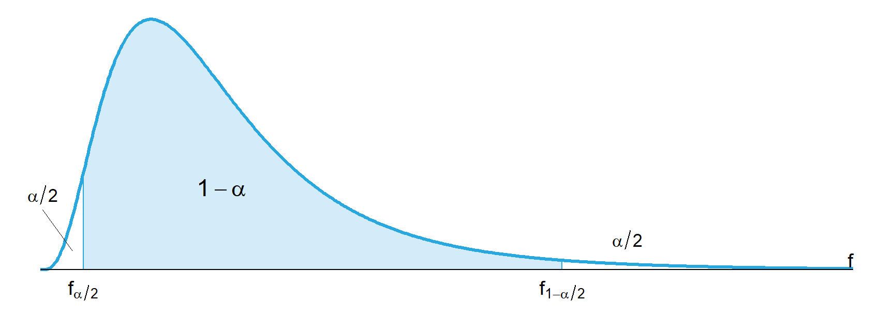

mochilas <- c(3.2, 4.1, 5.5, 3.8, 4.9, 6.2, 3.5, 5.1, 4.4, 3.9,
5.7, 6.5, 3.3, 4.7, 5.3, 4.0, 3.6, 4.8, 5.9, 6.1)
t.test(mochilas, conf.level = 0.95)$conf.int[1] 4.240793 5.209207
attr(,"conf.level")
[1] 0.95Estadística II
Escuela de Matemáticas · Universidad Industrial de Santander
Obtener conclusiones sobre una población a partir de una muestra, cuantificando la incertidumbre.
Estimación
¿Cuál es el consumo promedio de combustible de la flota?
→ Conocer el valor de un parámetro.
Pruebas de hipótesis
¿Frenan en menos distancia las llantas de la marca A?
→ Decidir sobre una afirmación.
La inferencia se divide en estas dos áreas (Walpole et al., 2012, p. 266).
| Símbolo | Se lee | Qué es | ¿Aleatorio? |
|---|---|---|---|
| \(\theta\) | “theta” | Parámetro: fijo, desconocido | No |
| \(\hat{\Theta}\) | “theta mayúscula gorro” | Estimador: la regla | Sí |
| \(\hat{\theta}\) | “theta gorro” | Estimación: el número | No |
Para la media: \(\theta = \mu\), \(\quad \hat{\Theta} = \bar{X}\), \(\quad \hat{\theta} = \bar{x}\).
Excepción por costumbre: \(\hat{p}\) para el estimador y para la estimación.
| Parámetro | Estimador |
|---|---|
| Media \(\mu\) | \(\bar{X}\) |
| Varianza \(\sigma^2\) | \(S^2\) |
| Proporción \(p\) | \(\hat{p} = X/n\) |
| \(\mu_X - \mu_Y\) | \(\bar{X} - \bar{Y}\) |
| \(p_X - p_Y\) | \(\hat{p}_X - \hat{p}_Y\) |
| \(\sigma_X^2/\sigma_Y^2\) | \(S_X^2/S_Y^2\) |
… tiene una distribución muestral centrada en el parámetro y concentrada alrededor de él (Devore, 2008, pp. 231, 235).
| Propiedad | Pregunta | Ejemplo |
|---|---|---|
| Insesgamiento | ¿\(E(\hat{\Theta}) = \theta\)? | \(E(S^2) = \sigma^2\) |
| Consistencia | ¿Se acerca a \(\theta\) al crecer \(n\)? | \(V(\bar{X}) = \sigma^2/n \to 0\) |
| Eficiencia | ¿Tiene la menor varianza? | Media frente a mediana |
| Suficiencia | ¿Usa toda la información? | Número de éxitos para \(p\) |
\[ \sum (X_i - \bar{X})^2 = \sum (X_i - \mu)^2 - n(\bar{X} - \mu)^2 \]
\[ E\left[\sum (X_i - \bar{X})^2\right] = n\sigma^2 - n\,\frac{\sigma^2}{n} = (n - 1)\,\sigma^2 \]
\[ \Rightarrow\ E(S^2) = \sigma^2 \qquad \text{(insesgado)} \]
Dividiendo entre \(n\), se subestimaría la varianza.

En la normal, ambas son insesgadas, pero la mediana tiene varianza \(\approx 1{,}57\,\sigma^2/n\): eficiencia relativa \(2/\pi \approx 0{,}64\) (Hodges & Lehmann, 1970).
\[ P\big(\hat{\Theta}_L < \theta < \hat{\Theta}_U\big) = 1 - \alpha \]
Interpretación: si se repitiera el muestreo muchas veces, cerca del 95 % de los intervalos contendría a \(\theta\) (Walpole et al., 2012, p. 271).

Intervalo calculado: \((4{,}24;\ 5{,}21)\).
✘ “Hay una probabilidad de 0,95 de que \(\mu\) esté entre 4,24 y 5,21.”
✔ “Tenemos una confianza del 95 % en que el intervalo contiene a \(\mu\)”: el procedimiento acierta el 95 % de las veces.
En un estudio, 120 investigadores y 442 estudiantes aceptaron en promedio más de tres de seis interpretaciones incorrectas (Hoekstra et al., 2014).
Método de la cantidad pivotal (Devore, 2008, p. 260):
Supuestos
Muestra aleatoria de una población normal; \(\mu\) desconocida; \(\sigma^2\) conocida (Canavos, 1988, p. 274).
Cantidad pivotal: \(\quad Z = \dfrac{\bar{X} - \mu}{\sigma/\sqrt{n}} \sim N(0, 1)\)

\[ -z_{1-\alpha/2} < \frac{\bar{X} - \mu}{\sigma/\sqrt{n}} < z_{1-\alpha/2} \]
Margen de error: \(E = z_{1-\alpha/2}\,\sigma/\sqrt{n}\). Tamaño de muestra: \(n = \left(z_{1-\alpha/2}\,\sigma/E\right)^2\), redondeado hacia arriba.
25 vehículos, \(\bar{x} = 12{,}632\) km/L, \(\sigma = 1{,}2\) km/L.
| Confianza | \(z_{1-\alpha/2}\) | Margen | Intervalo |
|---|---|---|---|
| 90 % | 1,645 | 0,395 | \((12{,}24;\ 13{,}03)\) |
| 95 % | 1,960 | 0,470 | \((12{,}16;\ 13{,}10)\) |
| 99 % | 2,576 | 0,618 | \((12{,}01;\ 13{,}25)\) |
Más confianza → intervalo más ancho (Walpole et al., 2012, p. 269).
Para un margen de 0,3 km/L al 95 %: \(n = (1{,}96 \times 1{,}2/0{,}3)^2 = 61{,}46\) → 62 vehículos.
Población normal, \(\sigma^2\) desconocida: \(\quad T = \dfrac{\bar{X} - \mu}{S/\sqrt{n}} \sim t(n - 1)\)

\[ \bar{x} \pm t_{1-\alpha/2;\,n-1}\,\frac{s}{\sqrt{n}} \]
20 estudiantes: \(\bar{x} = 4{,}725\) kg, \(s = 1{,}035\) kg, \(t_{0{,}975;\,19} = 2{,}093\).
\[ 4{,}725 \pm 2{,}093 \times \frac{1{,}035}{\sqrt{20}} = (4{,}24;\ 5{,}21) \text{ kg} \]
\[ \hat{p} \pm z_{1-\alpha/2}\sqrt{\frac{\hat{p}(1 - \hat{p})}{n}} \qquad (n\hat{p} \ge 5,\ n(1-\hat{p}) \ge 5) \]
Transporte público en Bucaramanga: 200 de 500 lo usan al menos tres veces por semana.
\[ 0{,}40 \pm 1{,}96\sqrt{\frac{0{,}40 \times 0{,}60}{500}} = (0{,}357;\ 0{,}443) \]
prop.test() calcula el intervalo de Wilson, más preciso con muestras pequeñas (Montgomery & Runger, 2018, p. 188; R Core Team, 2024).
\[ n = \frac{z_{1-\alpha/2}^2\; p(1 - p)}{E^2} \]
¿Sin información sobre \(p\)? Se usa \(p = 0{,}5\): da el \(n\) más grande posible, pero también el más costoso (Daniel, 1987, pp. 202-203; Walpole et al., 2012, p. 299).
Ejemplo: margen de 3 puntos, 90 % de confianza: \(n = 1{,}645^2 \times 0{,}25/0{,}03^2 = 751{,}5\) → 752 personas.
\(\dfrac{(n-1)S^2}{\sigma^2} \sim \chi^2(n - 1)\), con población normal.

\[ \left(\frac{(n - 1)s^2}{\chi^2_{1-\alpha/2;\,n-1}},\ \frac{(n - 1)s^2}{\chi^2_{\alpha/2;\,n-1}}\right) \]
El cuantil mayor va en el límite inferior: al tomar recíprocos se invierten las desigualdades.
12 diámetros, \(s^2 = 0{,}000545\) cm², 99 % de confianza (Canavos, 1988, p. 281):
\[ \left(\frac{11 \times 0{,}000545}{26{,}757},\ \frac{11 \times 0{,}000545}{2{,}603}\right) = (0{,}000224;\ 0{,}002305) \]
Para \(\sigma\): \((0{,}015;\ 0{,}048)\) cm.
La normalidad es indispensable
Este intervalo es poco robusto a la falta de normalidad (Montgomery & Runger, 2018, p. 184).
| Caso | Intervalo para \(\mu_X - \mu_Y\) |
|---|---|
| \(\sigma^2\) conocidas | \((\bar{x} - \bar{y}) \pm z_{1-\alpha/2}\sqrt{\sigma_X^2/n_X + \sigma_Y^2/n_Y}\) |
| \(\sigma^2\) iguales | \((\bar{x} - \bar{y}) \pm t_{1-\alpha/2;\,n_X+n_Y-2}\; s_p\sqrt{1/n_X + 1/n_Y}\) |
| \(\sigma^2\) diferentes (Welch) | \((\bar{x} - \bar{y}) \pm t_{1-\alpha/2;\,\nu}\sqrt{s_X^2/n_X + s_Y^2/n_Y}\) |
¿Cómo se interpreta?
Todo positivo: \(\mu_X > \mu_Y\). Todo negativo: \(\mu_X < \mu_Y\). Contiene el 0: no hay evidencia de diferencia.
En la práctica, si hay dudas sobre la igualdad de las varianzas, conviene usar Welch, que es la opción por defecto de t.test() (Delacre et al., 2017).
Precios de los mismos 8 productos en dos supermercados: se trabaja con las diferencias \(d_i\).
\[ \bar{d} \pm t_{1-\alpha/2;\,n-1}\,\frac{s_d}{\sqrt{n}} = (0{,}167;\ 0{,}608) \text{ miles de pesos} \]
¡Cuidado!
Tratadas por error como independientes: \((-3{,}32;\ 4{,}09)\), que contiene el 0. La variabilidad entre productos “tapa” la diferencia entre supermercados.
\[ (\hat{p}_X - \hat{p}_Y) \pm z_{1-\alpha/2}\sqrt{\frac{\hat{p}_X(1-\hat{p}_X)}{n_X} + \frac{\hat{p}_Y(1-\hat{p}_Y)}{n_Y}} \]

\[ \left(\frac{s_X^2/s_Y^2}{f_{1-\alpha/2;\,n_X-1,\,n_Y-1}},\ \frac{s_X^2/s_Y^2}{f_{\alpha/2;\,n_X-1,\,n_Y-1}}\right) \]
Valor de referencia: 1. Tiempos de reacción: \((0{,}599;\ 7{,}301)\) → contiene el 1. Exige normalidad (Montgomery & Runger, 2018, pp. 268, 273).
| Parámetro | En R |
|---|---|
| \(\mu\) (\(\sigma^2\) desconocida) | t.test(x)$conf.int |
| \(p\) | prop.test(x, n)$conf.int |
| \(\sigma^2\) | (n - 1) * var(x) / qchisq(c(1 - a/2, a/2), n - 1) |
| \(\mu_X - \mu_Y\) | t.test(x, y) (Welch) o t.test(x, y, var.equal = TRUE) |
| \(\mu_D\) | t.test(x, y, paired = TRUE) |
| \(p_X - p_Y\) | prop.test(c(x, y), c(nx, ny)) |
| \(\sigma_X^2/\sigma_Y^2\) | var.test(x, y)$conf.int |
Estadística II · UIS